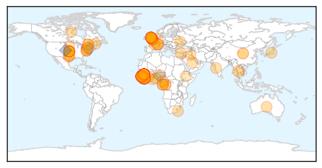
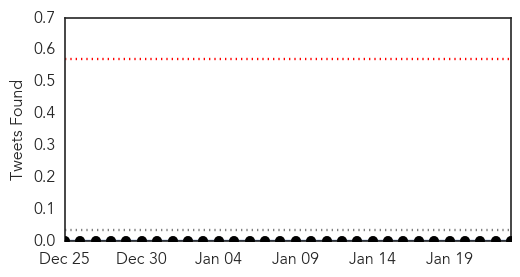

Ebola
30-Day Web Trend
1 alerts, 0 warnings

30-Day Twitter Trend
1 alerts, 0 warnings

Article Locations
Article Confidences

Top Articles:
- 1.000
- Ebola ebbing in West Africa, Liberia cremates 2,800 Ebola bodies - NAN
- 1.000
- United Nations Claim Ebola Epidemic Significantly Slowing, Sierra Leone Schools To Reopen In March, Ebola Health Workers Still Fearful
- 1.000
- Health authorities report 3 new Ebola cases in Liberia, previously declared Ebola free
- 1.000
- Ebola Vaccine Headed to West Africa
- 1.000
- Health authorities report 3 new Ebola cases in Liberia, previously declared Ebola free
- 1.000
- Fight against Ebola has reached a 'turning point'
- 1.000
- Ebola vaccine heads to Liberia for tests even as crisis eases
- 0.999
- UN reports significant drop in Ebola cases
- 0.999
- ‘My dream job to fight Ebola’ - KwaZulu-Natal
- 0.999
- Studies detail Ebola spread, response steps
- 0.999
- #Ebola vaccine set for trial in West Africa
- 0.998
- Ebola Declining but Still a Threat
- 0.998
- How we beat Ebola
- 0.998
- Falling Ebola cases show 'turning point'
- 0.998
- Sierra Leone emergency anti-malaria drive reaches 2.5 million people - TRFN
- 0.997
- Sierra Leone eases blocks on travel, business as Ebola wanes
- 0.997
- ′Victory is in sight′ in the fight against Ebola
- 0.997
- First doses of Ebola vaccine arrive in Liberia ahead of the largest-ever trial, with 30,000 volunteers taking part
- 0.997
- Science Journal: Just 5 Ebola cases left in Liberia
- 0.997
- New Brunswick and federal health officials test Ebola preparedness - New Brunswick
- 0.996
- Ebola 'Turning Point' as Cases Decline
- 0.996
- WHO says cash crunch, rains could thwart Ebola efforts
- 0.996
- Parents Blame Teenage Pregnancy On Water Crisis
- 0.996
- Experimental Ebola Vaccine On Its Way To Liberia For Human Trials
- 0.996
- Ebola Survivor Blood Trial May Move as New Cases in Liberia Wane
- 0.996
- Ebola crisis: Sierra Leone lifts quarantine measures; WHO warns against complacency
- 0.995
- Sierra Leone Lifts Nationwide Ebola Quarantines
- 0.995
- Liberia moves a step closer to Ebola vaccine trials
- 0.995
- UN health agency to hold special weekend session on Ebola; warns against donor fatigue - Sierra Leone
- 0.995
- Kailahun District Clocks 42 Ebola Free Days
- 0.995
- Government of Canada and Government of New Brunswick continue to work together to strengthen domestic preparedness for Ebola
- 0.995
- Just five Ebola cases left in Liberia, government says
- 0.994
- Government of Canada and Government of New Brunswick continue to work together to strengthen domestic preparedness for Ebola - News Press Release
- 0.994
- Ebola decimating Africa’s gorilla and chimpanzee populations, conservationists warn
- 0.994
- Médecins Sans Frontières (MSF) International
- 0.993
- 2 Nurse Dead, As Many Infected of Crimean-Congo Hemorrhagic Fever
- 0.993
- Health officials test preparedness for Ebola outbreak in New Brunswick
- 0.993
- Large-scale Ebola vaccine trial to start in Liberia
- 0.993
- Ebola vaccine trials may face limitations on waning epidemic
- 0.993
- National Ebola Response Update, 23rd January 2015 - Liberia
- 0.993
- Doctor from Ottawa’s CHEO headed to Sierra Leone to join Ebola fight (with video)
- 0.992
- 5 Ebola Cases Left in Liberia
- 0.992
- Fast-tracked Ebola vaccine offers fresh hope
- 0.992
- Endangered Gorillas, Chimpanzees Unseen Victims Of Ebola
- 0.992
- Health chiefs plead for more Ebola funds in final phase of epidemic
- 0.991
- Ebola situation still 'extremely alarming': World Health Organisation, Europe News & Top Stories
- 0.991
- Ebola drugs
- 0.990
- Sierra Leone lifts Ebola quarantine measures amid progress
- 0.989
- Sierra Leone lifts Ebola quarantine measures
- 0.989
- WHO runs low on cash for Ebola but progress key before rainy season
Showing top 50 articles...
Top Tweets:
- 0.729
- RT: @Reuters 2/Ebola Light signals ignored leading 2 postponing int.emergency response when reoccurrence of cases i…
- 0.673
- RT: ALERTE - Ebola: la Sierra Leone annonce la fin de toutes les mesures de quarantaine http://t.co/4m5BHO5khM…
- 0.653
- RT: Ebola data as Jan 23: Guinea +2/+44 Liberia +46/+31 Sierra Leone + 60/+14 per WHO compared to Jan 21 1/2 http://t.…
- 0.607
- Liberia is utilizing Treatment Units & Community Care Centers to slow the spread of Ebola. http://t.co/9qIYj24BIQ
- 0.604
- RT: The NIH is launching Ebola study in Liberia is in talks with Sierra Leone. Glaxo ships its vaccine. My story http…
- 0.501
- Community health monitors being trained to detect report Ebola trigger events in Sierra Leone. http://t.co/F8ORoliP79
Swine Flu
30-Day Web Trend
7 alerts, 3 warnings

30-Day Twitter Trend
0 alerts, 0 warnings

Article Locations

Article Confidences

Top Articles:
- 1.000
- Swine flu haunts Maharashtra again, kills nine in January
- 1.000
- Bhopal records second swine flu death; hospitals on alert
- 0.999
- Telangana govt declares high alert on spread of swine flu, AP too rings the alarm bells
- 0.998
- Swine flu infects 29; kills 6 in state in Jan
- 0.997
- Vizag Braces for Swine Flu Battle
- 0.996
- Swine flu deaths in Jaipur put Rajasthan on high alert
- 0.991
- Swine flu toll 22 in Telangana; three doctors test positive
- 0.989
- All measures in place to tackle swine flu: NIMS Director
- 0.989
- 'No Handshake, Only Namaste' New Mantra to Curb Swine Flu
- 0.987
- State Govt Decides to Bear Cost of Swine Flu Test
- 0.987
- 2 more suspected swine flu deaths in city
- 0.984
- Sarasota schools to expand flu vaccine push
- 0.975
- Hyderabad civic body to launch swine flu awareness campaign
- 0.968
- Swine flu alert in city after Amritsar death
- 0.967
- Central team calls for better hygiene, pro-active sample testing to reduce swine flu in Telangana
- 0.965
- Central team calls for better hygiene, pro-active sample testing to reduce swine flu in Telangana
- 0.938
- House arrest for flu sufferers?
- 0.935
- Swine flu claims 3 more lives in Rajasthan, toll mounts to 18
- 0.932
- 2 die of swine flu in Raj; toll mounts to 15
- 0.931
- Stay Inside And Watch TV, Say Scientists
- 0.928
- 2 suspected cases of swine flu in Vizag
- 0.890
- KGH to Get Lab Facility for Flu Tests
- 0.853
- Two die of swine flu in Rajasthan; toll mounts to fifteen
- 0.785
- Two swine flu patients’ kin, hospitals’ staff advised in Goa
- 0.750
- Swine flu likely to ‘hit’ Deputy CM T Rajaiah
Top Tweets:
-
No tweets found for Jan 23, 2015